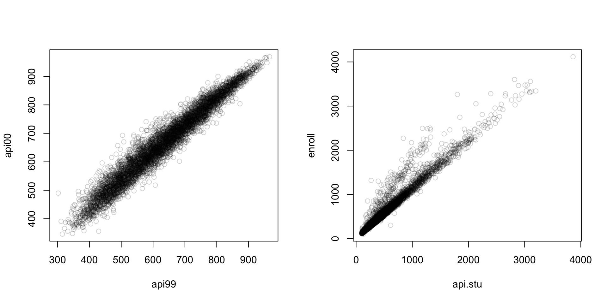
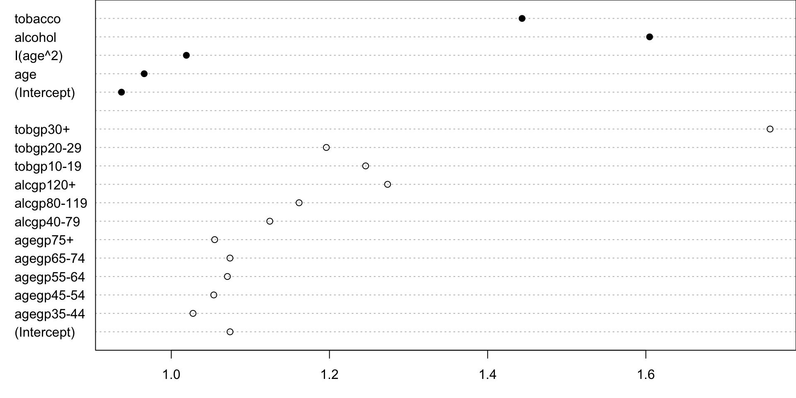
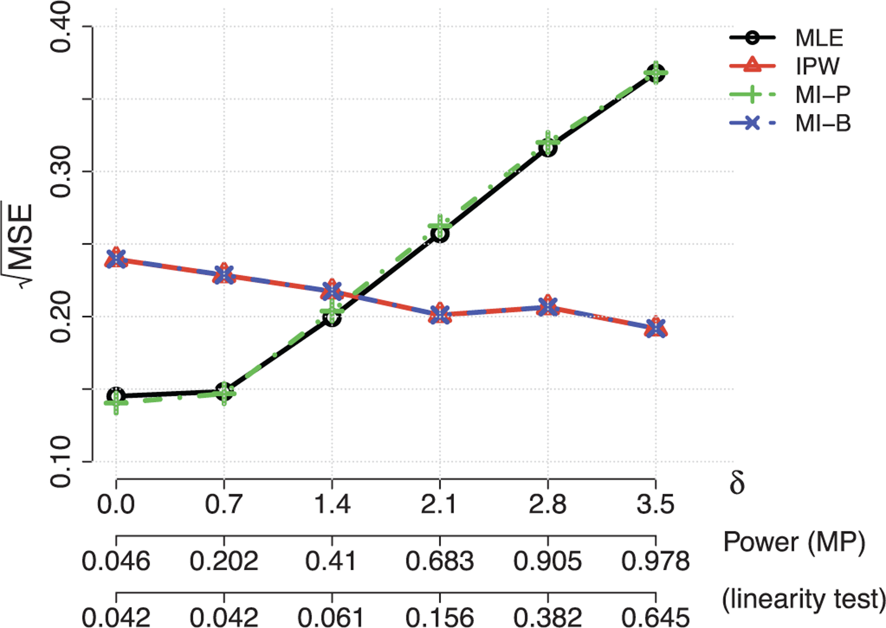
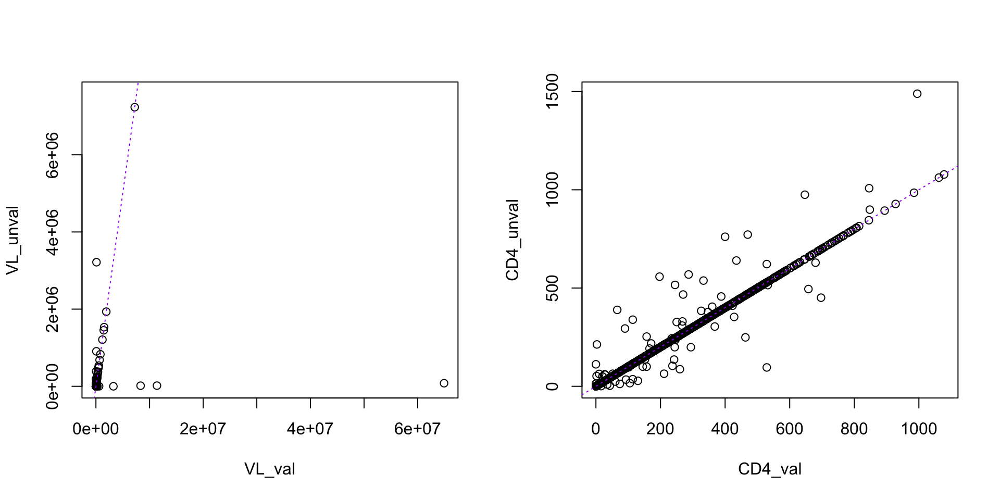
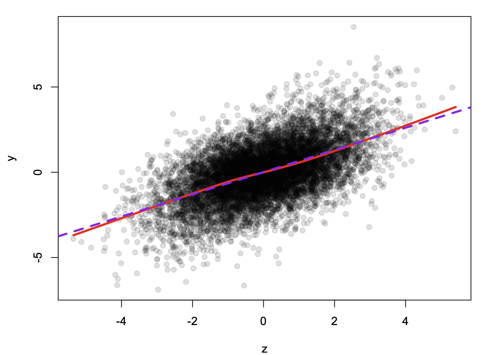
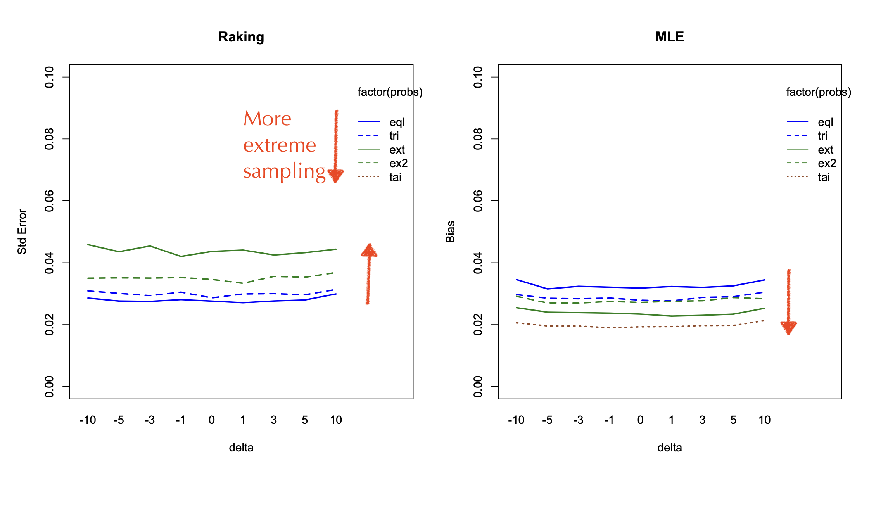
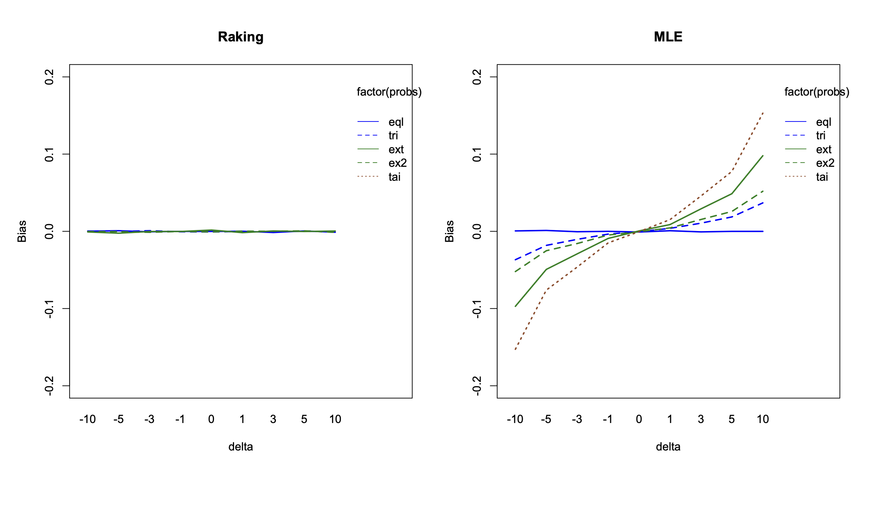
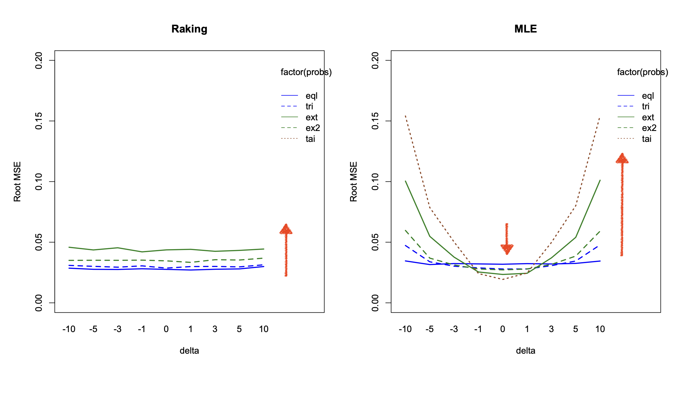

mean SE
api00 662.29 9.5377 mean SE
enroll 595.28 19.339First three sessions:
(no exercises in last session)
Me:
You?
In which we do one thing after another
Weight using reciprocal of \(\pi^*_i=\pi_{1,i}\pi_{2|1,i}\)
Q: Why is this not the probability \(i\) is in the subsample?
Binary outcome \(Y\) measured on whole cohort
Stratified sampling: all cases, same number of controls
Measure exposure \(X\) on cases, controls
Sample \(m\) people from cohort and measure \(X\)
Also measure \(X\) on everyone who has an event
Measure \(Y\) and error-prone variable \(A\) on whole cohort
Oversample dyads where birthweight or maternal weight is high or low, undersample where both are mid
Measure \(Y\) and many \(Z\), \(A\) on whole cohort
Sometimes \(A\) predicts \(X\) well, sometimes not
Sometimes \(Z,A\) is high-dimensional, sometimes not
Sometimes \(X\) is high-dimensional, sometimes not
We will usually take \(\pi_{i,1}\) to be constant: iid sample at phase 1
\(w_i=1/{\pi^*_i}\) or \(1/\pi_{2|1,i}\) are design or grossing-up weights
Person \(i\) in the subsample represents \(w_i\) people in the population/cohort.
\[E[\color{red}{w_iR_i}]=E\left[\frac{R_i}{\pi_i^*}\right]=1\] We can put \(\color{red}{w_iR_i}\) into any sum over \(i=1,\dots,N\) to get a weighted sample version
Unlike most surveys, we (typically) don’t have non-response
Cohort was random: we would have (?model) uncertainty even with complete data
Subsample is random: we have pure sampling uncertainty
Whole-cohort total (census parameter): \(\tilde{T}_X=\sum_{i=1}^N X_i\)
Estimator: \(\hat T_X=\sum_{i=1}^N \color{red}{w_iR_i} X_i\)
\[\mathrm{var}[\hat T_X]= \mathrm{var}[E[\hat T_X|\text{phase 1}]]+E[\mathrm{var}[\hat T_X|\text{phase 1}]]\] First term is full-cohort \(\mathrm{var}[\tilde T_X]\), second is sampling variance
library(survey)
cc_design<-twophase(id=list(~1,~1),
strata=list(NULL, ~y),
subset=~in_sample,
data=data)We have \(A\) on everyone, not just subsample
Adjust the weights to use the whole-cohort information
We have \(A\) on \(N-n\) unsampled people.
Define raking variables \(H_i=H(A)\) and compute raking adjustments \(g_i\) so that
\[\sum_{i=1}^N \color{blue}{g_iw_iR_i}H_i=\sum_{i=1}^N H_i\]
Before raking
\[\text{var}[\hat T_X]=\sum_{i,j=1}^n w_iX_i\,w_jX_j\,\text{cov}[R_i,R_j]\]
After raking
\[\mathrm{var}[\hat T_X]=\sum_{i,j=1}^n g_iw_ie_i\,g_jw_je_j\,\mathrm{cov}[R_i,R_j]\]
where \(e_j\) are residuals from regressing \(X\) on \(H\)
Data: California Academic Performance Index 1999-2000 on 6194 schools
enroll: school sizeapi99, api00 very strongly correlated. Pretend api00 is phase 2 \(Y\), api99 is phase 1 \(A\).

api99 mean SE
api00 664.64 2.4623 mean SE
enroll 593.78 18.764api99 strongly correlated with api00, but not with enroll
enroll mean SE
api00 664.19 2.4509 mean SE
enroll 615.93 8.4094api99 strongly correlated with api00api.stu number of students taking test correlated with total enrollmentOne way to do raking is to use weighted linear regression
api00 from api99 for everyone (no uncertainty to first order)Variance comes from the second step, so is just variance of residuals
\[\scriptsize \mathrm{var}[\hat T_X]=\sum_{i,j=1}^n g_iw_ie_i\,g_jw_je_j\,\mathrm{cov}[R_i,R_j]\]
If the subsample genuinely is a probability sample with known \(\pi_i\), there are no additional assumptions for raking/calibration!
api00~api99 has mean zero error by construction)If the subsample does not have known true \(\pi_i\) you can estimate the \(\pi_i\) by by logistic regression and then do raking
We used single variables, but you can use any combination that predicts \(X\)
We typically use a slightly different estimator that can’t produce negative weights
Multiple imputation to do raking is valid (and actually sensible for regression: next session)
and questions
Coffee?
In which a line must be drawn
survey package implementationsAgain: \((Y,Z,A)\mid (R,X)\)
For point estimates we can just put \(w_i\) in the objective function
\(\tilde\ell(\theta)=\sum_{i=1}^N \ell_i(\theta)\)
giving the census parameter \(\tilde\theta\), goes to
\(\hat\ell (\theta)=\sum_{i=1}^N \color{red}{w_iR_i}\ell_i(\theta)\)
giving the weighted estimator \(\hat\theta\)
Suppose we can write in iid data \[\sqrt{N}(\tilde\theta-\theta)=\frac{1}{\sqrt{n}}\sum_{i=1}^N h(X_i,Y_i,Z_i;\theta)+o_p(1)\]
\(h_i=(X_i,Y_i,Z_i;\theta)\) are influence functions
Influence functions turn any statistic into a sum!
OLS Regression: \(h_i=n(X^TX)^{-1}x_i(y_i-x_i'\beta)\)
If \(\hat\theta\) solves \(U(\theta)=\sum_i U_i(\theta)=0\) then \[h_i=E\left[\frac{1}{n}\frac{\partial U}{\partial\theta}\right]^{-1}U_i(\theta)\]
Everything looks like a sum!
\(\scriptsize \text{(not lasso, quantiles, mixed models)}\)
Data: California Academic Performance Index 1999-2000 on 6194 schools
api99, api00 very strongly correlated. Pretend api00 is phase 2 \(Y\), api99 is phase 1 \(A\).
Consider api00~enroll+ell+emer
\[h_i = (Z^TZ)^{-1}(1, z_1, z_2, z_3)^T(\texttt{api00}-\mu)\]
api99 correlated with \(h\)?Good raking variables will be \(h\) for some related model
Raw \(X\), \(Y\), \(Z\) will only be good for discrete (nearly-)saturated models
Want to fit api00~ell+emer+enroll
If we have enroll, ell, emer and api99 we could try
api99ell, emer, enrollapi99~ell+emer+enroll Estimate Std. Error t value Pr(>|t|)
(Intercept) 801.14929299 12.48592716 64.164181 1.347911e-132
ell -2.99157697 0.31471992 -9.505521 7.835588e-18
emer -3.30165579 0.63592547 -5.191891 5.233058e-07
enroll -0.05311036 0.01025413 -5.179413 5.549932e-07 Estimate Std. Error t value Pr(>|t|)
(Intercept) 802.76719841 10.23760676 78.413561 7.251337e-149
ell -3.00724140 0.30992540 -9.703114 2.136121e-18
emer -3.30906719 0.63879321 -5.180185 5.529798e-07
enroll -0.05332618 0.01017023 -5.243363 4.101895e-07 Estimate Std. Error t value Pr(>|t|)
(Intercept) 801.5697490 12.151986332 65.962035 7.996978e-135
ell -2.9918879 0.307695468 -9.723536 1.866677e-18
emer -3.4081492 0.605288308 -5.630621 6.230579e-08
enroll -0.0517647 0.009567195 -5.410646 1.837769e-07😞😞😞
model_ph1<-glm(api99~ell+emer+enroll, data=apipop_no_na)
apipop_no_na$h0<-resid(model_ph1)
dstrat2inf <- twophase(id=list(~1,~1), strata=list(NULL, ~stype),
subset=~in_subset, data=apipop_no_na)
dstrat2inf<-update(dstrat2inf, h1=h0*ell,
h2=h0*emer,
h3=h0*enroll)
dcal_inf <- calibrate(dstrat2inf, phase=2,
formula=~h0+h1+h2+h3, calfun="raking")
model_h<-svyglm(api00~ell+emer+enroll, design=dcal_inf)We use api99 for everyone in model_ph1, even when api00 is known
Estimate Std. Error t value Pr(>|t|)
(Intercept) 801.14929299 12.48592716 64.164181 1.347911e-132
ell -2.99157697 0.31471992 -9.505521 7.835588e-18
emer -3.30165579 0.63592547 -5.191891 5.233058e-07
enroll -0.05311036 0.01025413 -5.179413 5.549932e-07 Estimate Std. Error t value Pr(>|t|)
(Intercept) 801.74938976 4.126594175 194.28840 3.167425e-224
ell -3.63459562 0.123813218 -29.35547 2.708080e-73
emer -2.49786997 0.161315309 -15.48440 9.713470e-36
enroll -0.04182092 0.003760623 -11.12074 1.527149e-22🎉🎉🎉
We don’t usually have a single surrogate
Synthetic version of HIV cohort from Vanderbilt University Medical Center
Validation on simple random sample (Giganti et al, 2020)
We use the real data, but we can’t give it to you
ADE_val, CD4_val in subsampleADE_hat, CD4_hat for everyoneADE_hat~CD4_hat+Prior_ART with hat versions for everyoneADE_val~CD4_val+Prior_ART in calibrated design(see vccc_raking.R)
[1] "ID" "VL_unval" "VL_val" "ADE_unval" "ADE_val" "CD4_unval"
[7] "CD4_val" "Prior_ART" "Sex" "Age" imp_ADE<-svyglm(
ADE_val~ADE_unval+VL_unval+sqrt(CD4_unval)+Prior_ART+Sex+Age,
design=dvccc, family=quasibinomial)
imp_CD4<-svyglm(
CD4_val~ADE_unval+VL_unval+CD4_unval+sqrt(CD4_unval)+Prior_ART+Sex+Age,
design=dvccc)
## phase 1 imputations
mock.vccc$ADE_hat<-predict(imp_ADE, newdata=mock.vccc, type="response")
mock.vccc$CD4_hat<-predict(imp_CD4, newdata=mock.vccc, type="response")
## phase-1 model
mphase1<-glm(ADE_hat~CD4_hat+Prior_ART, data=mock.vccc,
family=quasibinomial) Estimate Std. Error t value Pr(>|t|)
(Intercept) -1.501074981 0.361115336 -4.1567744 3.562059e-05
CD4_val -0.007492357 0.001758059 -4.2617206 2.260602e-05
Prior_ART -0.147051089 0.336497680 -0.4370048 6.622213e-01 Estimate Std. Error t value Pr(>|t|)
(Intercept) -1.700874473 0.296411744 -5.7382155 1.339677e-08
CD4_val -0.006982936 0.001579938 -4.4197535 1.118907e-05
Prior_ART -0.140060831 0.288632819 -0.4852561 6.276225e-01🎉🎉🎉
survey 4.5-2 from r-universe you can dodvccc_cal <- calibrate(dvccc, formula=mphase1, phase=2, calfun="raking")and not have to set up h yourself
Raking solves \[\sum w_i R_i (U_i-\hat U_i) + \sum_i\hat U_i=0\] where \(\hat U_i\) is the prediction from the \(H_i\).
Equivalently \[\sum w_i R_i U_i + (1-w_iR_i)\hat U_i=0\] which is the AIPW form
If phase 1 is iid or srs or has large strata, any design-consistent estimator is of the AIPW class. The semiparametric-efficient one has \(\hat U=E[U_i\mid\text{phase 1}]\) (RRZ 1994)
Correctly specified multiple imputation for \(\hat U\) will converge to this as \(M\to\infty\)
Single imputation often isn’t bad
We don’t have theory to characterise the optimal estimator when phase-1 is eg cluster-sampled, but raking seems to work well.
and questions
twophase, calibrate for implementationSame time tomorrow
In which some have a better chance than others
Questions?
Suppose we are given an population divided into \(K\) strata, and one variable
Want to estimate the population total (or mean) of \(Y\)
\[\mathrm{var}[\hat T_Y]= \sum_k N_k^2\sigma^2_k/n_k\] given \(\sum_k n_k=\text{allowed }n\)
Optimal stratum choice is harder, but we know
How do we translate this result to optimal design for estimating a \(\beta\)? 🤔
How do we translate this result to optimal design for estimating a \(\beta\)?
Influence functions!!
\[n_k\propto N_k\sigma_k\]
where \(\sigma^2_k\) is now the variance of the efficient influence function for \(\beta\) in the complete cohort
\(\scriptsize\textit{[result is old; Chen & Lumley (2020) pointed out the influence-function connection]}\)
Estimating \(\sigma_k\) for influence functions needs simulation of \(X\) (?obviously)
Gives optimal design for IPW, works ok for raking
Need to reduce \(\mathrm{var}[\hat\beta]\) matrix to a single-number metric
A-optimal is easy: take \(\sigma^2_k\) as the sum of variances of influence functions and do Neyman-Wright allocation. Others probably need numerical optimisation.
Need to estimate \(\sigma^2_k=\mathrm{var}[h-\hat h]\), but we estimated \(\mathrm{var}[h]\) by approximating with \(\mathrm{var}[\hat h]\)
Suppose we expect from past years that
Then
Optimal sampling for \(\beta_{ell}\)
api00~ell+emer+enrollOptimal sampling for \(\beta_{ell}\)
e~emer+ell+enroll with e<-rnorm(0,30)Optimall package strata npop sd n_sd stratum_fraction stratum_size
1 (-1.2e+04,-4.89e+03] 110 1102.77 121305.16 0.01 3
2 (-4.89e+03,2.14e+03] 5424 1316.57 7141053.27 0.84 168
3 (2.14e+03,9.18e+03] 563 1804.05 1015679.82 0.12 24
4 (9.18e+03,1.62e+04] 52 2051.79 106693.27 0.01 3
5 (1.62e+04,2.33e+04] 6 2637.59 15825.53 0.01 2Ick
strata npop sd n_sd stratum_fraction stratum_size
1 (-Inf,-3e+03] 447 1234.56 551846.7 0.12 25
2 (-3e+03,-1e+03] 1048 552.92 579459.2 0.13 26
3 (-1e+03,1e+03] 3576 446.15 1595431.5 0.36 72
4 (1e+03,3e+03] 650 565.45 367541.6 0.08 16
5 (3e+03, Inf] 434 3142.10 1363672.8 0.30 61🎉🎉
Estimate Std. Error t value Pr(>|t|)
(Intercept) 768.48918307 12.749246025 60.277226 1.825806e-128
ell -3.16102000 0.295543580 -10.695614 2.521297e-21
emer -3.02624894 0.612815234 -4.938273 1.683057e-06
enroll -0.02606491 0.008951494 -2.911794 4.010153e-03 Estimate Std. Error t value Pr(>|t|)
(Intercept) 801.14929299 12.48592716 64.164181 1.347911e-132
ell -2.99157697 0.31471992 -9.505521 7.835588e-18
emer -3.30165579 0.63592547 -5.191891 5.233058e-07
enroll -0.05311036 0.01025413 -5.179413 5.549932e-07 Estimate Std. Error t value Pr(>|t|)
(Intercept) 810.19032385 14.44179126 56.100404 5.000346e-121
ell -3.78171031 0.27088869 -13.960384 4.951187e-31
emer -2.96375590 0.53201897 -5.570771 8.481760e-08
enroll -0.03824348 0.01517063 -2.520889 1.251958e-02Better results for ell, and closer to true value of -3.59
We’re thinking of change in API as random, so only
set.seed(2026-7-15)
apipop_no_na$delta_api<-rnorm(nrow(apipop_no_na),fitted(m),30)
m_delta<-glm(delta_api~ell+emer+enroll,data=apipop_no_na)
h<-survey:::estfuns(m_delta)
h_ell<-h[,2]
df<-data.frame(stratum=cut(h_ell,c(-Inf, -1000,-200,200, 1000, Inf)),
h=h_ell)
optimum_allocation(df,strata="stratum",y="h",nsample=200) strata npop sd n_sd stratum_fraction stratum_size
1 (-Inf,-1e+03] 534 883.50 471791.0 0.28 56
2 (-1e+03,-200] 1157 222.65 257604.7 0.15 30
3 (-200,200] 2743 90.13 247225.0 0.14 29
4 (200,1e+03] 1183 225.16 266360.8 0.16 31
5 (1e+03, Inf] 538 854.02 459464.4 0.27 54apipop_no_na$sample_strata<-the_sample$stratum
apipop_no_na$in_sample<-the_sample$sample_indicator==1
d2api_opt<-twophase(id=list(~1,~1),
strata=list(NULL, ~sample_strata),
subset=~in_sample, data=apipop_no_na
)
m_ph1<-glm(api99~ell+emer+enroll,data=apipop_no_na)
d2api_rakeopt<-calibrate(d2api_opt, formula=m_ph1,
phase=2,calfun="raking")
mrakeopt<-svyglm(api00~ell+emer+enroll,design=d2api_rakeopt) Estimate Std. Error t value Pr(>|t|)
(Intercept) 768.48918307 12.749246025 60.277226 1.825806e-128
ell -3.16102000 0.295543580 -10.695614 2.521297e-21
emer -3.02624894 0.612815234 -4.938273 1.683057e-06
enroll -0.02606491 0.008951494 -2.911794 4.010153e-03 Estimate Std. Error t value Pr(>|t|)
(Intercept) 801.74938976 4.126594175 194.28840 3.167425e-224
ell -3.63459562 0.123813218 -29.35547 2.708080e-73
emer -2.49786997 0.161315309 -15.48440 9.713470e-36
enroll -0.04182092 0.003760623 -11.12074 1.527149e-22 Estimate Std. Error t value Pr(>|t|)
(Intercept) 810.25678041 6.523438876 124.207001 2.331193e-185
ell -3.60345468 0.122316387 -29.460114 3.751308e-73
emer -2.64427952 0.301637235 -8.766423 9.775962e-16
enroll -0.04900074 0.006259283 -7.828490 3.246856e-13Design/raking compete to use the phase-1 info
Take the phase-two sampling incrementally in multiple steps
Helps with two problems
[Reilly, 1996; McIsaac & Cook, 2015; Chen & Lumley 2020,2022]
Instead of (?arbitrary) strata, can we optimise sampling probabilities per individual?
The optimal probabilities are known (Lagrange multipliers)
\[\pi_i \propto \|h_i\|\] where \(\|h_i\|\) is just the absolute value for a single parameter and the Euclidean norm for \(A\)-optimality with multiple parameters.
Can sample
More flexible than stratified sampling
The Horvitz-Thompson variance estimator is \[\sum_{i,j} \frac{h_i}{\pi_i}\frac{h_j}{\pi_h}\frac{\mathrm{cov}[R_i,R_j]}{\pi_i\pi_j}\]
Under stratified sampling only within-stratum differences contribute to the total variance!!
\(\scriptsize\textit{[Yang et al (2025) does comparisons]}\)
and questions
Coffee?
In which models are the evidence of things not seen
We have not been assuming the outcome model \(Y|X,Z\) is correctly specified
The semiparametric information bound is much worse if you don’t assume \(Y|X,Z\) is correct
Now look at semiparametric likelihood analyses:
missreg3)sleev)Model assisted:
Model assisted:
Model assisted
Model-based
svyglm)glm) is MLE (Prentice & Pyke) and is fully efficient (Breslow, Robins, Wellner)Large efficiency gains with model-based estimation, but mostly for strong effects of continuous covariates. Gain is sensitive to model correctness.
Optimal design is roughly the same for both: equal numbers of cases and controls
\(\small\text{Ille-et-Villaine case-control study: tobacco, alcohol, oesophageal cancer}\)

The benefit of MLE over raking is \(O(n^{-1/2})\) when the model is correct, so we must also care about \(O(n^{-1/2})\) biases from misspecification.
These are misspecifications that are not reliably detectable: an omitted variable with \(\delta/\sqrt{n}\) coefficient can be detected asymptotically with power \(<1\) depending on \(\delta\).
Han et al (2021) confirmed that worst-case directions of misspecification will make the MLE less accurate than weighted estimation (for estimating the full-cohort best-fitting model.)

This is universal (contiguity)
Take-home message
Giganti et al (2020) looked at validation studies by imputation.
Chris Wild & Alastair Scott (et al), Breslow (et al)
Given a model for \(Y|X,Z\) and a sampling rule for \(R|Y,Z,A\) we can derive sampling weights from the model and the population distribution of \(Y,Z,A\)
Need discrete strata \(S=Y\times A\) but not discrete \(X,Z\)
Using these weights instead of design weights or post-stratification weights gives maximum likelihood estimates. (needs iterative maximisation)
hist from him and inst from the local institution pathologisthist only on a subsample [1] "trel" "tsur" "relaps" "dead" "study" "stage" "histol"
[8] "instit" "age" "yr" "specwgt" "tumdiam" instit
relaps 0 1
0 3026 220
1 507 162Take everyone with unfavorable histology or who relapsed and 10% of the rest (not actually optimal but simple)
, , in_sample = FALSE
instit
relaps 0 1
0 2726 0
1 0 0
, , in_sample = TRUE
instit
relaps 0 1
0 300 220
1 507 162 Df Chi Pr(>Chi)
factor(stage) 3 26.581206 7.206003e-06
histol 1 11.236698 8.019569e-04
factor(stage):histol 3 8.350028 3.930537e-02 Estimate Std. Error z value Pr(>|z|)
(Intercept) -2.2760169 0.1084557 -20.985679 0.000000e+00
factor(stage)2 0.5495976 0.1884715 2.916078 3.544617e-03
factor(stage)3 0.5438782 0.1983078 2.742596 6.095568e-03
factor(stage)4 1.1474769 0.2339542 4.904707 9.356679e-07
histol 0.9492171 0.2831693 3.352118 8.019569e-04
factor(stage)2:histol 0.4586675 0.3844326 1.193102 2.328293e-01
factor(stage)3:histol 0.9083360 0.3756430 2.418083 1.560251e-02
factor(stage)4:histol 1.1206074 0.4627113 2.421828 1.544265e-02 Estimate Std. Error t value Pr(>|t|)
(Intercept) -2.2709613 0.1091076 -20.813961 3.473160e-82
factor(stage)2 0.5563211 0.1892441 2.939701 3.349389e-03
factor(stage)3 0.5374950 0.1992506 2.697583 7.084199e-03
factor(stage)4 1.1934787 0.2451480 4.868401 1.277969e-06
histol 0.7317742 0.3216045 2.275386 2.306178e-02
factor(stage)2:histol 0.6380708 0.4451851 1.433271 1.520458e-01
factor(stage)3:histol 1.1338488 0.4259281 2.662066 7.871984e-03
factor(stage)4:histol 1.0352510 0.6084326 1.701505 8.911215e-02We will impute histol using all the variables, fit a model at phase 1 using the imputed values, then calibrate
wilms_imp <- svyglm(histol~instit*stage+I(age>10),
family=quasibinomial, design=dwilms)
nwts$imphist <- predict(wilms_imp, newdata=nwts, type="response")
wilms_ph1<-glm(relaps~stage*imphist+age*I(age>10)+tumdiam,family=binomial,data=nwts)
dwilms_cal<-calibrate(dwilms, formula=wilms_ph1, phase=2, calfun="raking")
rake_wilms<-svyglm(relaps~factor(stage)*histol, design=dwilms_cal,
family=quasibinomial) Estimate Std. Error t value Pr(>|t|)
(Intercept) -2.2156619 0.1030314 -21.504730 8.533521e-87
factor(stage)2 0.4972452 0.1884509 2.638593 8.434873e-03
factor(stage)3 0.4280595 0.1809705 2.365355 1.817407e-02
factor(stage)4 1.0451346 0.1788703 5.842974 6.629006e-09
histol 0.6937756 0.3201105 2.167300 3.041181e-02
factor(stage)2:histol 0.6725682 0.4447030 1.512399 1.307007e-01
factor(stage)3:histol 1.2261510 0.4218278 2.906758 3.720331e-03
factor(stage)4:histol 1.1407461 0.6040004 1.888651 5.918407e-02MLE still slightly better (it assumes \(\text{relaps}\perp\text{instit}\mid \text{histol}\))
Phase 1 data
sleevFit parametric models getting more flexible with increasing \(n\)
Synthetic version of HIV cohort from Vanderbilt University Medical Center
Validation on simple random sample (Giganti et al, 2020)
ADE_unval
ADE_val 0 1
0 738 52
1 6 39 ADE_unval
0 1
FALSE 744 91
TRUE 1142 110
Define 20-df spline basis for predicting error in CD4_val, then fit ADE_val~CD4_val+Prior_ART using all data and modelling measurement error
sn <- 20
data.logistic <- spline2ph(x = "CD4_unval", size = 20, degree = 3,
data = mock.vccc, group = "Prior_ART",
split_group = TRUE)
res_logistic <- logistic2ph(y = "ADE_val", y_unval = "ADE_unval",
x = "CD4_val", x_unval = "CD4_unval",
z = "Prior_ART", data = data.logistic,
hn_scale = 1/2, se = TRUE, tol = 1e-04,
max_iter = 1000, verbose = FALSE)Call:
logistic2ph(y_unval = "ADE_unval", y = "ADE_val", x_unval = "CD4_unval",
x = "CD4_val", z = "Prior_ART", data = data.logistic, hn_scale = 1/2,
se = TRUE, tol = 1e-04, max_iter = 1000, verbose = FALSE)
Coefficients:
Estimate SE Statistic p-value
Intercept -1.574657457 0.294924144 -5.3391948 9.336029e-08
CD4_val -0.007716374 0.000360677 -21.3941372 0.000000e+00
Prior_ART -0.187432734 0.294781954 -0.6358352 5.248839e-01We did this one yesterday
Estimate Std. Error t value Pr(>|t|)
(Intercept) -1.700874473 0.296411744 -5.7382155 1.339677e-08
CD4_val -0.006982936 0.001579938 -4.4197535 1.118907e-05
Prior_ART -0.140060831 0.288632819 -0.4852561 6.276225e-01Pretty comparable in this example (maybe because SRS)
CD4 count vs viral load:
VL_unval VL_val ADE_unval ADE_val
Min. : 6.0 Min. : 2 Min. :0.00000 Min. :0.00000
1st Qu.: 195.5 1st Qu.: 184 1st Qu.:0.00000 1st Qu.:0.00000
Median : 1339.0 Median : 1332 Median :0.00000 Median :0.00000
Mean : 49651.9 Mean : 141814 Mean :0.09631 Mean :0.05389
3rd Qu.: 11841.0 3rd Qu.: 11274 3rd Qu.:0.00000 3rd Qu.:0.00000
Max. :7583057.0 Max. :64919534 Max. :1.00000 Max. :1.00000
NA's :1252 NA's :1252
CD4_unval CD4_val
Min. : 0 Min. : 0.0
1st Qu.: 99 1st Qu.: 103.0
Median : 209 Median : 211.0
Mean : 255 Mean : 258.1
3rd Qu.: 366 3rd Qu.: 364.0
Max. :1489 Max. :1078.0
NA's :1252 Need a log transformation of viral load
mock.vccc$lVL_unval<-log10(mock.vccc$VL_unval)
mock.vccc$lVL_val<-log10(mock.vccc$VL_val)
sn <- 20
data.linear <- spline2ph(x = "lVL_unval", data = mock.vccc, size = sn,
degree = 3, group = "Sex")
res_linear <- linear2ph(y_unval = "CD4_unval", y = "CD4_val",
x_unval = "lVL_unval", x = "lVL_val",
z = "Sex", data = data.linear, hn_scale = 1,
se = TRUE, tol = 1e-04, max_iter = 1000,
verbose = FALSE)Call:
linear2ph(y_unval = "CD4_unval", y = "CD4_val", x_unval = "lVL_unval",
x = "lVL_val", z = "Sex", data = data.linear, hn_scale = 1,
se = TRUE, tol = 1e-04, max_iter = 1000, verbose = FALSE)
Coefficients:
Estimate SE Statistic p-value
Intercept 273.13537 15.148279 18.030786 0.0000000000
lVL_val -13.49624 3.802844 -3.548986 0.0003867174
Sex 25.14649 10.447723 2.406887 0.0160891624Workflow
ADE_val, CD4_val in subsampleADE_hat, CD4_hat for everyoneADE_hat~CD4_hat+Prior_ART with hat versions for everyoneADE_val~CD4_val+Prior_ART in calibrated design(see vccc_raking_vl.R)
Estimate Std. Error t value Pr(>|t|)
(Intercept) 286.36175 24.614027 11.63409 4.303303e-29
log10(VL_val) -16.95939 6.222465 -2.72551 6.555110e-03
Sex 33.39689 15.545944 2.14827 3.198036e-02 Estimate Std. Error t value Pr(>|t|)
(Intercept) 278.27687 16.712673 16.650650 6.043543e-54
log10(VL_val) -13.46006 4.259502 -3.160007 1.634710e-03
Sex 22.71757 10.297633 2.206096 2.764985e-02MLE still somewhat better than raking
The optimal design for sleev need not have \(\pi>0\)
In general not known,
(Tao et al, 2020)
Optimal design is very sensitive to model specification
\[Y=\beta_0+\beta_1X+N(0,1)\] \[A= X+N(0,1)\]
Purple is assumed model; red is a smoother




Last chance!